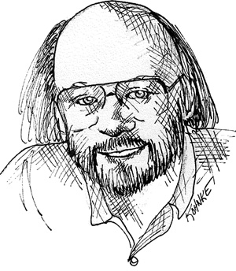
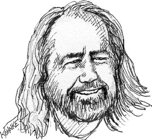
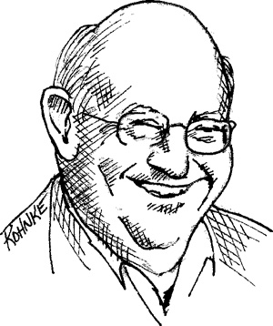
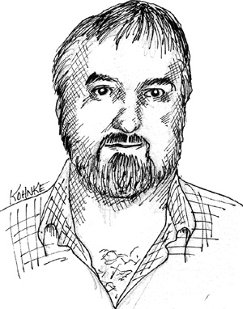

Clean Code

The only valid measurement of code quality is WTFs/minute
-
깨끗한 코드를 작성하는 방법은 배우기 어렵다.
-
장인 정신으로 고생해가며 체득 필요.
-
자전거 타는 법에 능숙해지면 자전거가 마치 몸의 일부처럼 움직이듯이 익혀야 한다.
-
-
그림을 보면 대부분의 사람은 잘 그려졌는지 엉망으로 그려졌는지 안다.
-
하지만 잘 그린 그림을 구분한다고해서 그림을 잘 그리는 것은 아니다.
-
다시 말해, 깨끗한 코드와 나쁜 코드를 구분할 줄 안다고 꺠끗한 코드를 작성할 줄 알다는 뜻은 아니다.
-
나중은 결코 오지 않는다(Later equals Never).
Leave the campground cleaner than you found it.
-
잘짠 코드가 전부는 아니다. 시간이 지나도 언제나 깨끗하게 유지해야 한다.
-
시간이 지날수록 코드가 좋아지는 프로젝트에서 작업한다고 상상해보라! 전문가라면 너무 당연하지 않은가! 지속적인 개선이야말로 전문가 정신의 본질이 아니던가?
나쁜 코드로 치르는 대가

-
나쁜 코드가 쌓일 수록 간단한 변경은 없어진다.
-
매번 얽히고설킨 코드를 '해독’해서 얽히고설킨 코드를 더한다.
-
시간이 지나면서 쓰레기는 점점 깊어지고 커지고, 청소할 방법이 없어진다. 불가항력이다.
-
팀의 생산성을 떨어지고 마침대 0에 근접하게 된다.
왜 코드가 이렇게 되었을까?
-
전적으로 우리 프로그래머에게 있다.
-
관리자가 일정과 요구사항을 밀어붙이는 이유는 그들의 책임이다. 좋은 코드를 사수하는 일은 우리 프로그래머의 책임이다.
-
예를 들어, 우리가 의사라고 가정하다. 환자가 순을 씻지 말라고 요구한다. 시간이 너무 걸리니까. 하지만 의사는 단호하게 거부한다. 왜? 질병과 감염의 위험은 환자보다 의사가 더 잘 아니까.
-
나쁜 코드의 위험을 이해하지 못하는 관리자의 말을 그대로 따르는 행동은 전문가답지 못하다.
-
기한을 맞추는 유일한 방법은, 그러니까 빨리 가는 유일한 방법은, 언제나 코드를 최대한 깨끗하게 유지하는 습관이다.
클린 코드란?

나는 우아하고 효율적인 코드를 좋아한다. 논리가 간단해야 버그가 숨어들지 못한다. 의존성을 최대한 줄여야 유지보수가 쉽다. 오류는 명백한 전략에 의거래 철저히 처리한다. … 깨끗한 코드는 한 가지를 제대로 한다.
C++ 창시자이자 The C++ Programming Language 저자
-
비야네는 철저한 오류 처리도 언급한다. 세세한 사항까지 꼼꼼하게 신경 쓰라는 말이다. 프로그래머들이 대충 넘어가는 부분 중 하나가 오류 처리다.
-
즉, 깨끗한 코드는 세세한 사항까지 꼼꼼하게 처리하는 코드다.

깨끗한 코드는 단순하고 직접적이다. 깨끗한 코드는 잘 쓴 문장처럼 읽힌다.
Object Oriented Analysis and Design with Application 저자
-
그래디는 비야네와 흡사한 의견을 표명하지만 가독성을 강조한다.
-
코드틑 추축이 아니라 사실에 기반해야 한다. 반드시 필요한 내용만 담아야 한다.

꺠끗한 코드는 작성자가 아닌 사람도 읽기 쉽고 고치기 쉽다. 단위 테스트 케이스와 인스 테스트 케이스가 존재한다. 깨끗한 코드에는 의미 있는 이름이 붙는다.
OTI 창립자이다 이클립스 전략의 대부
-
데이브는 가독성에 더해 깨끗한 코드는 다름 사람이 고치기 쉽다고 단언한다.
-
실제로 읽기 휘운 코드와 고치기 쉬운 코드는 엄연히 다르다.

깨끗한 코드는 언제나 누군가 주의 싶게 짰다는 느낌을 준다. 고치려고 살펴봐도 딱히 손 댈 곳이 없다. 작성자가 이미 모든 사항을 고려했으므로. 고칠 궁리를 하다보면 언제나 제자리로 돌아온다.
Working Effectively with Legacy Code 저자
-
깨끗한 코드는 주의 깊게 작성한 코드다. 누군가 시간을 들여 깔끔하고 단정하게 정리한 코드다.
중복 줄이기, 표현력 높이기, 초반부터 간단한 추상화 고려하기, 내게는 이 세 가지가 꺠끗한 코드를 만드는 비결이다.
Extreme Programming Installed와 Extreme Programming Adventure in C# 저자
코드를 읽으면서 짐작했던 기능을 각 루틴이 그대로 수행한다면 깨끗한 코드가 불러도 되겠다. 코드가 그 문제를 풀기 위한 언어처럼 보인다면 아름다운 코드라 불러도 되겠다.
위키Wiki 창시자, 피트Fit 창시자, 익스트림 프로그래밍eXtreme Programming 공동 창시자
-
코드를 독해하느라 머리를 쥐어짤 필요가 없어야 한다. 읽으면서 짐작한 대로 돌아가는 코드가 깨끗한 코드다.
-
프로그램을 단순하게 보이도록 만드는 열쇠는 언어가 아니다. 언어를 단순하게 보이도록 만드는 열쇠는 프로그래머다.
less 'type and erases'
-
이 책에서는 우리 오브젝트 멘토 진영이 생각하는 깨끗한 코드를 설명한다.
-
하지만 우리 생각이 절대적으로 '옳다’라는 단전은 금물이다.
-
우리들 못지않게 경험 많은 집단과 전문가가 존재한다. 마땅히 그들에게서도 배우라고 권한다.
-
코드를 읽는 시간대 코드를 짜는 시간 비율이 10 대 1을 훌쩍 넘는다. 새 코드를 짜면서 우리는 끊임없이 기존 코드를 읽는다.
-
주변 코드가 읽기 쉬우면 새 코드를 짜기도 쉽다.
Meaningful Names
의도를 분명히 밝혀라
-
의도가 분명한 이름이 정말로 중요하다는 사실을 거듭 강조한다.
-
좋은 이름을 지으려면 시간이 걸리지만 좋은 이름으로 절약하는 시간이 훨씬 더 많다.
-
"보통 나는 확정하기 전에 이름을 여러 차례 바꾼다. 개발 도구는 이름ㅇ르 바꾸기가 상당히 쉽다." - 론 제프리스
// as-is
val d // 경과 시간(단위: 날짜)
// to-ba
val elapsedTimeInDays
val daySinceCreation
val fileAgeInDays-
코드 맥락이 코드 자체에 명시적으로 드러나야 한다.
-
개발자가 숨겨둔 정보를 독자가 안다고 가정하는 코드는 피하라
-
단순하기만한 코드는 읽기 좋은 코드가 아니다.
-
그릇된 정보를 피하라
-
나름대로 널리 쓰이는 의미가 있는 단어를 다른 의미로 사용해도 안된다.
-
서로 흡사한 이름을 사용하지 않도록 주의한다.
-
유사한 개념은 유사한 표기법을 사용한다. 이것도 정보다.
-
일관성이 떨어지는 표기법은 그릇된 정보다.
-
개발자는 코드 자동 완성 기능을 자주 사용하는데, 십중팔구 상세한 주석이나 메서드 목록을 살펴보지 않은 채 이름만 보고 객체를 선택한다.
-
의미 있게 구분하라
-
대충 컴파일 통과하게끔 이름을 바꾸는 것을 피하라
-
class라는 예약어가 있다고klass를 사용하지 말아라.
-
-
불용어noise word를 추가하는 방식도 적절하지 못하다. (e.g.,
a1,a2, …) -
a나 the와 같은 접두어를 사용하지 말라는 소리가 아니다.
-
의미가 분명히 다르다면 사용해도 무방하다.
-
zork라는 변수가 있다고해서 theZork라고 이름을 지어서는 안 된다는 말이다.
-
-
변수 이름에 variable이라는 단어는 단연코 금물이다.
-
montyAmount과 monty는 구분이 안된다. customerInfo는 customer와, accountDate는 account와, theMessage는 message과 구분이 안된다.
-
헝가리 표기법은 정보를 담은거라 불용어가 아니다.
-
-
읽는 사람이 차이를 알도록 이름을 지어라
발음하기 쉬운 이름을 사용하라
-
발음하기 어려운 이름은 토론하기도 어렵다. 바보처럼 들리기 십상이다.
-
우리는 형편없는 이름을 참아내고 있을 뿐이다.
-
발음하기 쉬운 이름을 사용하면(명확한 이름을 사용하면) 토론할 때 보다 지적인 대화가 가능해진다.
검색하기 쉬운 이름을 사용하라
-
개인적으로 간단한 메서드에서 로컬 변수만 한 문자를 사용한다. - 엉클 밥
-
이름 길이는 범위 크기에 비례해야 한다. (휴리스틱 N5)
인코딩을 피하라
-
넣은 정보는 많은데 굳이 인코딩 정보까지 넣을 필요가 없고 이름을 해독하기만 어려워질 뿐이다.
-
인코딩한 이름은 거의 발음하기 어렵고 오타가 생기기도 쉽다.
헝가리식 표기법
-
이름 길이가 제한된 언어를 사용하던 옛날에는 어쩔 수 없이 위 규칙을 위반했다.
-
포트란은 첫 글자로 유형을 표현했고, 초창기 베이식은 글자 하나에 숫자 하나만 허용했다.
-
이러한 어려움에 헝가리식 표기법은 기존 표기법을 완전히 새로운 단계로 끌어올렸다.
-
현대 프로그래밍 언어는 훨씬 많은 타입을 제공하고, 컴파일러가 타입을 기억하고 강제한다.
-
게다라 클래스와 함수는 점차 작아지는 추세다. 즉, 변수를 선언한 위치과 사용하는 위치는 멀지 않다.
-
이제는 헝가리식 표기법이나 기타 인코딩 방식은 오히려 방해가 될 뿐이다.
-
변수, 함수, 클래스 이름이나 타입을 바꾸기가 어려워지며, 가독성도 떨어진다.
멤버 변수 접두어
-
멤버 변수에 접두어를 붙힐 필요가 없다.
-
클래스와 함수는 접두어가 필요없을 정도로 작아야 마땅하다.
-
IDE는 멤버 변수를 다른 색상으로 보여주므로 구분이 가능하다.
-
코드를 읽을수록 접두어는 관심 밖으로 밀려난다. 결국 접두어는 옛날에 작성한 구닥다리 코드라는 징표가 되버린다.
인터페이스 클래스와 구현 클래스
-
개인적으로 인터페이스 이름은 접두어를 붙이지 않는 편이 좋다고 생각한다. - 엉클 밥
-
코드를 다룰 때, 주로 클래스보단 인터페이스를 다룬다.
자신의 기억력을 자랑하지 마라
-
범위가 아주 작고 다른 이름들과 충돌되지 않는 선에서 i, j, k는 괜찮다.
-
전문가 프로그래머는 명료함이 최고라는 사실을 이해한다. 전문가 프로그래머는 자신의 능력을 좋은 방향으로 사용해 남들이 이해하는 코드는 내놓는다.
-
제이콥 닐슨의 휴리스틱 평가방법 10가지 중 6번째 - 기억보다는 인식하게 할 것
클래스 이름
-
클래스와 객체 이름은 명사나 명사구가 적합하고 동사는 사용하지 않는다.
-
Good: Customer, WikiPage, Account, AddressParser
-
Bad: Manager, Processor, Data, Info 등과 같은 많은 의미의 단어
메서드 이름
-
메서드 이름은 동사나 동사구가 적합하다.
-
Good: postPayment, deletePage, save
-
접근자Accessor, 변경가Mutator, 조건자Predicate 는 javabean 표준에 따라 get, set, is 접두어를 붙힌다.
기발한 이름은 피하라
-
특정 문화에서만 사용하는 농담, 은어(?)는 피하는 편이 좋다.
-
의도룰 분명하고 솔직하게 표한하라.
한 개념에 한 단어를 사용하라
-
추상적인 개념 하나에 단어 하나를 선택해 이를 고수한다.
-
find, search, retrieve로 제각각 부르면 혼란스럽다.
-
메서드 이름은 독자적이고 일관적이어야 한다. 그래야 주석을 뒤져보지 않고도 프로그래머가 올바른 메서드를 선택한다.
말장난을 하지 마라
-
한 단어를 두 가지 목적으로 사용하지 마라.
-
일관성을 지키고자 add를 사용하더라도 맥락에 맞는 단어를 사용하라.
-
프로그래머를 코드를 최대한 이해하기 쉽게 짜야 한다. 집중적인 탐구가 필요한 코드가 아니라 대충 훑어봐도 이해할 코드 작성이 목표다.
해법 영역에서 가져온 이름을 사용하라
-
코드를 읽는 사람도 프로그래머라는 사실을 명심한다.
-
모든 이름을 문제 영역domain에서 가져오는 정책은 현명하지 못하다.
문제 영역에서 가져온 이름을 사용하라
-
적설한 '프로그래머 용어’가 없다면 문제 영여역에서 이름을 가져온다.
-
우수한 프로그래머와 설계자라면 해법 영역과 문제 영역을 구분할 줄 알아야 한다.
의미 있는 맥락을 추가하라
-
모든 방법이 실패하면 마지막 수단으로 접두어를 붙힌다.
-
예를 들어, firstName, lastName street, city, state, zipcode 라는 변수가 있을 경우 state 가 주소의 일부라는 사실을 금방 알아챌까?
-
이 때, addr라는 접두어를 추가하면 맥락이 좀 더 분명해진다.
-
물론 Address라는 클래스를 생성하면 더 좋다.
-
불필요한 맥락을 없애라
-
고급 휘발유 충전소(Gas Station Deluxe) 어플리케이션을 짠다고 해서 모든 클래스 이름에 GSD라는 접두어를 붙히지 말자.
-
IDE에서 G를 입력하고 자동 완성 키는 누르면 모든 클래스를 열거할 것이다.
-
IDE는 개발자를 지원하는 도구이며, IDE를 잘 활용하게끔 인터페이스, 네이밍이 되어야 한다.(이것이 우선되어야 하는 건 아니다.)
-
같은 주소Address라도 포트 주소, MAX 주소를 구분해야 한다면 PostalAddress, MAC과 같이 작성하면 의미가 좀 더 분명해진다. 이것이 이름을 붙이는 이유가 아니던가?
마치면서
-
좋은 이름을 선택하려명 설명 능력이 뛰어나야 하고 문화적인 배경이 같아야 한다. 이것이 제일 어렵다.
-
사람들이 이름을 바꾸지 않으려는 이뉴 하나는 다른 개발자가 반대할까 두려워서다.
-
우리들 대다수는 자신이 짠 클래스 이름과 메서드 이름을 모두 암기하지 못한다. 암기는 요즘 나오는 도구에게 맡기고, 가독성있는 코드를 짜는 데 집중해야 마땅하다.
-
여느 코드 개선 노력과 마찬가지로 이름 역시 나름대로 바궜다가는 누군가 질책할지도 모른다. 그렇다고 코드를 개선하려는 노력을 중단해서는 안 된다.
Functions
-
작게 만들어라
-
중첩구조가 생길 만큼 함수를 크게 만들지 말자.
-
-
한 가지만 해라
-
함수를 만드는 이유가 큰 개념을 다음 추상화 수준에서 여러 단계로 나눠 수행하기 위해서가 아닌가.
-
-
함수당 추상화 수준은 하나로 하라
-
한 함수 내에서 추상화 수준을 섞으면 다른 사람이 읽기 어려워진다.
-
근본 개념과 세부사항이 뒤섞이면서 깨어진 찬문처럼 사람들이 함수에 세부사항을 점점 더 추가한다.
-
-
위에서 아래로 읽히도록 하라.
-
위에서 아래로 읽으면 함수의 추상화 수준이 한 단계씩 낮아지게 한다.
-
-
서술적인 이름을 사용하라
-
함수가 작고 단순할수록 서술적인 이름을 짓기 쉽다.
-
짧고 어려운 이름보다 길고 서술적인 이름이 낫다.
-
이름을 붙힐 때는 일관성있어야 한다.
-
-
함수 인수
-
가장 이상적인 인수는 0개다.
-
함수를 읽을 때 인수가 있다면 인수가 무엇인지도 알아야한다.
-
-
부수 효과를 일으키지 마라
-
많은 경우 시간적인 결합temporal coupling이나 순서 종속성order dependency를 초래한다.
-
-
오류코드보다 예외를 할용하라
Comments
-
잘 달린 주석은 그 어떤 정보보다 유용하다.
-
우리는 코드로 표현을 못하거해 주석을 사용한다. 그래서 주석은 반겨 맞을 손님이 아니다.
-
주석은 오래될수록 코드에서 멀어진다. 오래될수록 완전히 그릇될 가능성도 커진다.
-
코드는 변화하고 진화한다.
-
부정확한 주석은 아예 없는 주석보다 훨씬 더 나쁘다.
-
주석을 나쁜 코드를 보환하지 못한다.
-
코드로 의도를 표현하라.
-
좋은 주석
-
법적인 주석: 저작권, 외부 문서, …
-
결과를 경고하는 주석
-
중요성을 강조하는 주석
-
공개 API에서 Javadocs
-
-
나쁜 주석
-
주절거리는 주석: 결국 코드를 읽어야 한다.
-
같은 이야기를 중복하는 주석
-
코드보다 부정확하지만 독자가 함수를 대충 이해하고 넘어가게 만든다.
-
-
쓸모없는 주석
-
의무적으로 다는 주석
/** * * @param title 제목 * @param author 저자 * @param track 트랙 */ fun addCD(title: String, author: String, track: String) -
이력을 기록하는 주석
/* * 2020/01/01: 클래스를 옮겼다. */ -
있으나마나 한 주석
/** 월 중 일자. */ val dayOfMonth /** * 월 중 일자를 반환한다. * * @return 월 중 일자 */ fun getDayOfMonth() = dayOfMonth -
무서운 잡음
/** The name. */ val name: String -
위치를 표시하는 주석
// Actions ///////////////////////////////// -
닫는 괄호에 다는 주석
while() { ... } // while -
공로를 돌리거나 저자를 표시하는 주석
-
소스 코드 관리 시스템에 이미 있다.
-
주석이 있으면 다른 사람들이 코드에 관해 누구한테 물어볼지 아니까 유용하다 여길지도 모르겠지만, 현실적으로 이런 주석은 그냥 오랫동안 코드에 방치되어 점차 부정확하고 쓸모없는 정보로 변하기 쉽다.
-
-
주석으로 처리한 코드
-
현대엔 우수한 소스 코드 관리 시스템이 대신 기억해주니 주석으로 처리할 필요가 없다.
-
-
HTML 주석
-
비공개코드에서 Javadocs
-
Formatting
-
프로그래머라면 형식을 깔끔하게맞춰 코드를 짜야 한다.
-
적절한 행 길이를 유지하라.
-
개념은 빈 행으로 분리하라.
-
세로 밀집도를 가지자. = 연관성
-
수직거리
-
어디에 있는지 찾고 기억하느라 시간과 노력을 소모하지 말자.
-
변수는 사용하는 위치에 최대한 가까이 선언한다.
-
인스턴스 변수는 클래스 맨 처음에 선언한다.
-
클래스의 인스턴스 변수는 대부분 클래스 메서드들이 사용한다.
-
모은다는 사실이 중요하다. 변수 선언을 어디서 찾을지 모두가 알고 있어야 한다.
-
-
종속 함수
-
가능하면 호출하는 함수를 호출되는 함수보다 먼저 배치한다.
-
-
-
개념적 유사성
-
친화도가 높을수록 코드를 가까히 배치한다.
-
호출되는 함수를 호출하는 함수보다 나중에 배치한다.
-
그러면 소스 코드 모듈이 고차원에서 저차원으로 자연스럽게 내려간다.
-
-
-
들여쓰기한 코드는 구조가 한눈에 보인다.
-
팀 규칙
-
소프트웨어가 일관적인 스타일을 보이게 한다.
-
Objects and Data Structures
|
Note
|
자료 구조(Data Structure)
구조체는 서로 다른 타입의 데이터를 묶어 관리할 수 있게 해주는 자료 구조이며 레코드라고 불리기도 한다. 전형적으로 별다른 동작(method, function) 없이 자료를 노출한다.(public variable)
|
|
Note
|
객체(Object)
객체는 동작을 공개하고 자료룰 숨긴다.
|
-
추상 인터페이스를 제공해 사용자가 구현을 모른 채 자료의 핵심을 조작할 수 있어야 진정한 의미의 클래스다.
-
개발자는 객체가 포함하는 자료를 표현할 가장 좋은 방법을 심각하게 고민해야 한다. 아무 생각 없이 조회/설정 함수를 추가하는 방법이 가장 나쁘다.
-
분별 있는 프로그래머는 모든 것이 객체라는 생각이 미신임을 잘 안다. 때로는 단산한 자료 구조와 절차적인 코드가 가장 적합한 상황도 있다.
-
디미터 법칙은 잘 알려진 휴리스틱.
-
모듈은 자신이 조작하는 객체의 속사정을 몰라야 한다는 법칙.
-
객체는 조회 함수로 내부 구조를 공개하면 안된다는 의미.
-
그러면 내부 구조를 숨기지 않고 노출하는 셈.
-
기차 충돌(train wreck)
final Strin goutputDir = ctxt.getOptions().getScratchDir().getAbsolutePath(); -
잡종구조
-
중요한 기능도 수행하는 함수도 있고, 공개 변수나 공개 조회/설정 함수도 있고, 공개 조회/설정 함수는 비공개 변수를 그대로 노출한다.
-
이러한 잡종 구조는 양쪽의 단점만 모아놓은 구조다.
-
-
구조체 감추기
자료 전달 객체(Data Transfer Object, DTO)
-
자료 구조체의 전형적인 형태는 public 변수만 있고 method가 없는 클래스
-
이런 자료 구조체를 때로는 자료 전달 객체(Data Transfer Object, DTO)라고 함
-
DTO는 데이터베이스와 통신하거나 소켓에서 받은 메시지의 구문을 분석할 때 유용하다.
-
흔히 DTO는 데이터베이스에 저장된 가공되지 않은 정보를 애플리케이션 코드에서 사용할 객체로 변환하는 일련의 단계에서 가장 처음으로 가용되는 구조체.
-
-
좀 더 일반적인 형태는 빈(bean) 구조.
-
빈은 비공개 변수를 조회/설정 함수로 조작한다.
-
활성 레코드
-
DTO의 특수한 형태
-
public 변수가 있거나 private 변수에 get/set 함수가 있는 자료 구조지만, 대개 save나 find와 같은 탐색 함수도 제공.
-
활성 레코드드는 데이터베이스 테이블이나 다른 소스에서 자료를 직접 변환한 결과다.
-
불행히도 활성 레코드에 비지니스 규칙 메서드를 추가해 이런 자료 구조를 개체로 취급하는 개발자가 흔하다.
-
하지만 이는 바람직하지 않다. 그러면 자료 구조도 아니고 객체도 아닌 잡종 구조가 나오기 때문이다.
-
활성 레코드는 자료 구조로 취급하면 된다.
결론
-
시스템을 구현할 때.
-
새로운 자료 타입을 추가하는 유연성이 필요하면 객체가 더 적합.
-
새로운 동작을 추가하는 유연성이 필요하면 자료 구조와 정차적인 코드가 더 적합.
-
-
우수한 소프트웨어 개발자는 편견없이 이 사실을 이해해 직면한 문제에 최적인 해결책을 선택한다.
Error Handling
오류 코드보다 예외를 사용하라
-
먼저 오류error와 예외exception를 구분할 줄 알아야 한다.
unchecked 예외를 사용하라
-
여러 해 동안 checked와 unchecked 예외의 장단점을 가지고 논쟁이 이뤄졌다.
-
예전에는 checked 예외가 좋다고 여겨졌다. 실제로도 장점이 존재한다.
-
but, 오늘날에는 안정적인 소프트웨어를 만드는 요소로 checked 예외가 반드리 필요하지 않다는 사실이 분명해졌다.
-
C#, C++, python, rube 에서는 checked 예외를 지원하지 않는다. 그럼에도 안정적인 소프트웨어를 구현하기에 무리가 없다.
-
checked 예외가 치르는 비용에 상응하는 이익을 제공하는지 (철저히) 따져봐야 한다.
-
checked 예외는 OOPOpen Closed Principle를 위반한다.
-
코드가 변경되면 상위 단계 메서드 선언부를 모두 고쳐야 한다.
-
모듈과 관련된 코드가 전혀 바뀌지 않았음에도 모듈을 다시 빌드/배포해야 한다.
-
예외 처리를 위해 연쇄적인 수정을 일어난다.
-
모든 함수가 최하위 함수에서 던지는 예외를 알아야 하므로 캡슐화가 깨진다.
-
-
때로는 확인된 예외도 유용하지만, 일반적인 어플리케이션은 의존성이라는 비용이 이익보다 크다.
|
Note
|
'빅 너드 랜치의 코틀린 프로그래밍' 참고
코틀린에서는 모든 예외가 unchecked 예외다. 대부분의 checked 예외는 발생했더라도 우리가 특별히 할 것이 없다. 경험상 checked 예외는 문제를 해결하기보다는 오히려 더 많은 문제(코드 중복, 이해하기 어려운 복구 로직, 예외 무시)를 야기하므로 코틀린을 포한한 현대 언어에서는 unchecked 예외를 지원한다. |
예외에 의미를 제공하라
-
"예외의 상태 메세지에 실패 관련 정보를 담아라." - 이펙티브자바 3판. 아이템 75
호출자를 고려해 예외 클래스를 정의하라
-
"추상화 수준에 맞는 예외를 던져라." - 이펙티브자바 3판. 아이템 73
-
오류를 분류하는 방법은 수없이 많다. (발생한 위치, 발생한 컴포넌트, 유형 등..)
-
오류를 정의할 때, 프로그래머에게 가장 중요한 관심사는 오류를 잡아내는 방법이 되어야 한다.
-
흔히 예외 클래스가 하나만 있어도 충분한 코드가 많다. 예외 클래스에 포함된 정보로 오류를 구분해도 괜찮은 경우가 그렇다.
-
한 예외는 잡아내고 다른 예외는 무시해도 괜찮은 경우라면 여러 예외 클래스를 사용한다.
정상 흐름을 정의하라
-
예외 처리를 할 때 특수 사례 패턴SPECIAL CASE PATTERN을 사용하면 유용하다.
-
클라이언트 코드가 예외적인 상황을 처리할 필요가 없고, 클래스나 객체가 예외적인 상황을 캡슐화해서 처리한다.
-
에러를 코드로 반환하라는 얘기는 아닌 것 같다. 정상 처리할 수 있는 데이터로 반환하라는 얘기이다.
null을 반환하지 마라
-
메서드에 null을 반환하는 것보다 예외를 던지거나 특수 사례 객체를 반환하면 유용하다.
-
많은 경우 특수 사계 객체가 손쉬한 해결책이다.
-
리스트를 반환해야하는 메서드에서 null이 들어와서 NPE가 발생하거나 중간에 예외를 발생하는 것보다
Collections.emptyList()를 반환하는 방식.
-
null을 전달하지 마라
-
파라미터가 null 이 들어올 경우
InvalidArgumentException을 던질 수 있다. 하지만 외부에서 해당 예외 처리가 필요해진다. -
assert 문을 사용할수도 있지만, 이는 문서화를 통해 코드를 읽기에는 편하지만 문제를 해결하지는 않는다.
-
대다수 프로그래밍 언어는 호출자가 실수도 넘기는 null을 적절히 처리하는 방법이 없다.
-
애초에 null을 넘기지 못하도록 금지하는 정책이 합리적이다.
결론
-
깨끗한 코드는 읽기도 좋아야 하지만 안정성도 높아야 한다.
Boundaries
Unit Tests
-
테스트 코드는 실제 코드 못지 않게 중요하다.
-
코드에 유연성, 유지보수성, 재사용성을 제공하는 버팀목이 바로 단위 테스트이다. 테스트 케이스가 없다면 모든 변경이 잠정적인 버그다.
-
깨끗한 테스트 코드를 만들려면 세 가지가 필요하다. 가독성, 가독성, 가독성.
-
테스트 당 한 개념만 테스트하라. (반드시 하나의 assert을 말하는 것이 아님)
-
개념 당 assert 문 수를 최소로 줄여라.
-
F.I.R.S.T. 규칙을 따라 깨끗한 테스트를 만들어라.
-
Fast: 테스트는 빨라야 한다.
-
Independent: 각 테스트는 서로 의존하면 안 된다.
-
Repeatable: 어떤 환경에서도 반복 가능해야 한다.(네트워크에 연결되지 않은 환경에서도)
-
Self-Validating: 결과값으로 성공 아니면 실패를 내야 한다.
-
Timely: 테스트는 적시에 작성해야 한다.
-
-
테스트 코드를 지속적으로 깨끗하게 관리하라.
Classes
Systems
Emergence
Concurrency
Successive Refinement
JUnit Internals
Refactoring SerialDate
Smells and Heuristics
Appendix A: Concurrency II
Appendix B: org.jfree.date. SerialDate
Appendix C: Cross References of Heuristics
Etc
-
0=AZXamDlYGgNKeGDejOxLyBkYM2cNrst9bwafdHZuIH6CC6D0a_TNrNUKy4Obk8AREP5I4KShcWLOQhZZ8E8Qzdd0q3kO3muQBHJfqSCkADXRv9We2uqppJLnq5g1OAYCIK7YP5jXbjMrjneOWgecIm_wv7l2bjoCbvLE0ccDzH7lUA&tn=%2CO%2CP-y-R